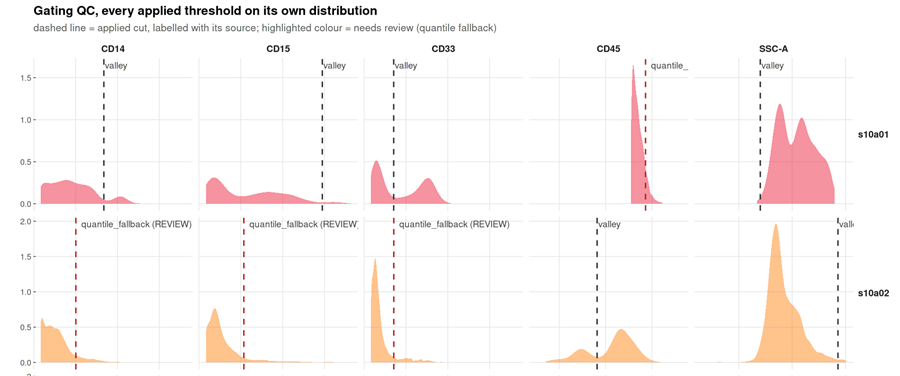

Documentation: https://bhagesh-h.github.io/cyRAVEN/
An R package for immunophenotyping of multi-sample flow cytometry data, with per-sample gate derivation and donor-level differential abundance and differential state testing.
A directory of FCS files becomes population frequencies, marker expression, a shared UMAP and between-group statistics. Every threshold is placed within the sample it applies to, every frequency carries the uncertainty of the cut and of the event count behind it, and six diagnostics test whether the gating specification held.
It works both ways round. The supervised path scores populations you declare in advance and then tries to falsify the declaration. Explore mode (--explore) is the complement: unsupervised clustering over every eligible channel, ignoring the specification and the parent gate, which is the only way to find a population nobody declared. Explore writes to its own directory and changes no existing output, and --explore-only needs no specification at all. See Explore mode.
Why
Manual gating is the dominant source of technical variance in multi-sample immunophenotyping: operators gating identical files report population sizes differing by approximately 32%, and analyst subjectivity accounts for up to 78% of technical variability once more than one person is involved (Cadwell et al., 2021, PDA J Pharm Sci Technol 75:33). Fixed gate coordinates transferred between samples do not remove this variance; they convert it into a systematic bias that tracks staining intensity.
cyRAVEN removes the analyst from threshold placement and quantifies the residual uncertainty rather than concealing it. Each cut is resampled from the events it was derived from and re-derived over the settings that placed it, and the resulting spread is propagated to every population that reads it, so a frequency separated by a clean gap and one sitting on a shoulder are not reported to the same apparent precision.
One constraint governs the design:
The unit of replication is the donor, not the event.
Event counts are set by acquisition duration rather than by study design. Every test aggregates to one value per sample before estimation; quantities that cannot be aggregated are reported with effect sizes and no p-value.
Quick setup
Docker is the supported execution path, for a numerical reason rather than convenience: uwot is a stochastic embedder whose output varies with its own version and with the BLAS beneath it, and every gate is placed at a kernel density minimum, so a different density implementation moves thresholds and therefore the frequencies that would be published. The image pins R 4.4.3, a dated CRAN snapshot and Bioconductor 3.20.
1. Get the image
Either pull the published one or build it from source. They are the same image; pick by whether you intend to change the code.
Pull. A download rather than a compile, and the image every published run here was produced with.
Then give it the short local name every command below uses:
That second command is only for readability. Use bhagesh/cyraven:1.0.0 directly instead if you prefer.
Build. For a modified source tree, an air-gapped host, or if you would rather not run a third-party image. The build context is the repository root, the directory holding DESCRIPTION.
The first build compiles the dependency stack and takes 15 to 25 minutes. It finishes by running --help and printing every package version, so a broken image fails at build time rather than during an analysis.
Both routes pin R 4.4.3, the same dated CRAN snapshot and Bioconductor 3.20, so they are numerically interchangeable. Confirm what you have:
[1] '1.0.0'2. Run the demonstration cohort
Nothing is downloaded: the data ship inside a package cyRAVEN already depends on, so the example is reproducible offline and cannot break when a repository moves or a certificate expires.
Four commands, one block each. Copy and run them one at a time.
1. Make the folders.
2. Write the cohort, its sample sheet and its config.
docker run --rm -v "$PWD/demo:/demo" \
--entrypoint Rscript cyraven:1.0.0 \
/opt/cyraven/src/inst/scripts/demo_data.R /demoEnds with:
wrote samples.csv, panel.yaml and sample_map.csv to /demo
cohort: GvHD grade 1 n=7; GvHD grade 3 n=283. Validate the inputs in seconds, without analysing anything.
docker run --rm -v "$PWD/demo:/data:ro" -v "$PWD/results:/results" \
cyraven:1.0.0 --dir /data/fcs \
--samples /data/samples.csv --config /data/panel.yaml \
--group-column cohort --reference-group "GvHD grade 1" \
--batch-column visit --outdir /results --checkIt should report 35 files, four resolved markers, that every marker the specification names is present, that the sheet covers every file, and the group sizes. Nothing is written and nothing is analysed. Fix anything it reports before running step 4, which costs minutes rather than seconds.
4. Run it.
docker run --rm -v "$PWD/demo:/data:ro" -v "$PWD/results:/results" \
cyraven:1.0.0 --dir /data/fcs \
--samples /data/samples.csv --config /data/panel.yaml \
--group-column cohort --reference-group "GvHD grade 1" \
--batch-column visit --cluster --outdir /resultsEvery path inside a flag is a path inside the container, and --outdir must fall within a mounted volume or the output is discarded when the container exits. On Windows PowerShell substitute ${PWD} for $PWD; on Git Bash prefix with MSYS_NO_PATHCONV=1.
This writes 24 figures and 35 tables from 35 samples across five allogeneic transplant recipients (Brinkman et al., 2007, Biol Blood Marrow Transplant 13:691; Artistic-2.0).
3. Read the result
Open results/report.html. It carries every figure and table the run produced, embedded in one self-contained file that references nothing beside it, in the order the outputs have to be read. Figures zoom and download at full resolution; each table is its own toggle, carrying a line saying what it holds, and is searchable, sortable, paged and exportable to CSV.
Inspect recon_diagnostics.png and gating_qc.png before any quantity derived from them: a threshold placed on a distribution shoulder rather than a density minimum is visible there and in no downstream table.

Two samples from that run, five markers each. The full figure carries one row per sample; this is the top of it.
Each panel is one marker in one sample, and the dashed line is the cut that was applied to it. Read it column by column:
-
valleyin black is a threshold placed at a real density minimum.CD45in the top row sits just right of the peak, separating the leukocytes from everything below them. -
quantile_fallback (REVIEW)in red means no minimum was found, so the cut came from a percentile instead. The second row has three of them. Those populations are still reported, with the fallback recorded inthresholds_used.csv, and they are the ones to check before quoting a number.
Comparing the two rows is the point. The CD14 cut is in a different place in each, because these are different samples with different staining, and the correct cut genuinely differs. A fixed coordinate copied between them would be right for at most one.
4. Your own data
Two files besides the FCS directory: one CSV with a row per file, and one YAML declaring what to score.
A sheet with a row for every file, which you then fill in.
docker run --rm -v "$PWD/data:/data" cyraven:1.0.0 \
--dir /data/fcs --recursive --write-samples /data/samples.csvThe annotated config template.
docker run --rm --entrypoint sh cyraven:1.0.0 -c \
'cat /usr/local/lib/R/site-library/cyRAVEN/examples/analysis_template.yaml' \
> data/analysis.yamlEdit both, run --check until it reports no problems, then run. The complete sequence for every task, in Docker and in R, with the situation each option is for, is in Running cyRAVEN.
Documentation
Every page below is also available as a single PDF, one chapter per page, with a table of contents and continuous page numbering: cyRAVEN-manual.pdf. It is rebuilt with the site, so it never lags behind these pages. Every column of every reference table is sized to the width its own content needs, so the wide ones read upright rather than being squeezed until the columns touch, and each table and figure stays on the same page as the heading above it.
New to flow cytometry? Flow cytometry for dummies explains what an event is, what a cut is, why SSC-A sits in a population definition next to two antibodies, and what the -A on a channel name means. Every other page assumes it.
Before you trust a result, Known limitations collects every caveat in one place: what the 1.0.0 control fix means for results produced by an earlier version and how to tell whether yours were affected, where the automated gates have and have not been validated, and which comparisons this package will not make. It also records what was deliberately left out and why, so the same arguments do not get relitigated.
Code and setup
| Page | Content |
|---|---|
| Running cyRAVEN | Every command in Docker and R, which variation to use in which situation, and the complete reference for all 116 options |
| Inputs | The sample sheet and the config: every column, the templates, and the errors the format can raise |
| Gating specification | Declaring populations, functional blocks and ratios; per-sample thresholding and the source column; arcsinh against logicle |
| Claude skill | Installing and using the bundled Claude Code skill, which executes through Docker by default |
| Interoperability | Method selection by question type, and handing a cyCONDOR clustering to cyRAVEN to obtain an executable gate |
| Known limitations | Every caveat in one place, how to tell whether an older result was affected by the 1.0.0 control fix, and what was deliberately left out with the reason |
| Function reference | Every exported function, grouped by stage |
Science and output
| Page | Content |
|---|---|
| How it works | The ten pipeline stages with the function implementing each, and executable examples of cofactor estimation, density minimum detection and group comparison |
| Diagnostics | The checks in reading order, from validating inputs before the run through gate inspection, staining QC, threshold drift, gate uncertainty, batch structure and conformance |
| Explore mode | Unsupervised discovery over every channel, run beside the declared analysis or standalone; the cluster-level QC gate, and what --maybe-learn lets the two sides tell each other |
| Output files | Every file the pipeline writes, its columns, the flag producing it, and why event counts are not cell counts |
| Statistics | Sample-level aggregation; rank tests against moderated t; the compositional constraint; covariate diagnosis against adjustment; clinical variables as the question rather than a nuisance; multiplicity; differences expressed in units of uncertainty |
| Worked example | Every figure from a run on public data, each with what it measures and what that run shows |
| Scope | Nine excluded methods with the reasoning and the condition under which each becomes appropriate |
These pages are the website, not the install. The package sources carry all fifteen vignettes, but they are not built into the installed copy, so browseVignettes("cyRAVEN") returns nothing inside the image and on a plain install. Building them would add several megabytes of rendered HTML and figures to a package whose footprint is already deliberate, and the site is always current with main. Function help is installed and complete, ?run_cyraven and 192 other topics work offline. For the prose, use the links above or build the vignettes yourself from a source checkout with devtools::build_vignettes().
One consequence worth knowing if you check the package yourself: because inst/doc is absent, R CMD check reports two warnings, Files in the 'vignettes' directory but no files in 'inst/doc' and Directory 'inst/doc' does not exist. Both are consequences of not building vignettes rather than defects, and every other check, including all 248 tests, passes.
Installation without Docker
Reproducibility of numerical output is not guaranteed outside the pinned environment, for the reasons given under Quick setup.
install.packages("BiocManager")
BiocManager::install("flowCore")
remotes::install_github("bhagesh-h/cyRAVEN")
library(cyRAVEN)
run_cyraven(list(
dir = "demo/fcs",
outdir = "results",
samples = "demo/samples.csv",
config = "demo/panel.yaml",
group_column = "cohort",
reference_group = "GvHD grade 1"
))FlowSOM is an optional dependency. When absent, self-organising map clustering falls back to the implementation within the package and all other behaviour is unchanged.
Citation
citation("cyRAVEN")Cite FlowSOM (Van Gassen et al., 2015, Cytometry A 87:636) when using the unsupervised clustering, and diffcyt (Weber et al., 2019, Commun Biol 2:183) for the aggregation strategy underlying the differential state tests.
A note on how parts of this were written
Commit messages and parts of the documentation, this README, the vignettes and the roxygen comments, were drafted with Anthropic’s Claude, mostly Claude Opus 5 through Claude Code, with earlier sections written using Opus 4.1 and Sonnet 4.5.
The analysis code and its results are the author’s, and every number quoted in the documentation comes from a run rather than from a draft. Prose written this way can still describe the code incorrectly. If something here does not match what the package does, please open an issue, a documentation error is a bug and is worth reporting as one.